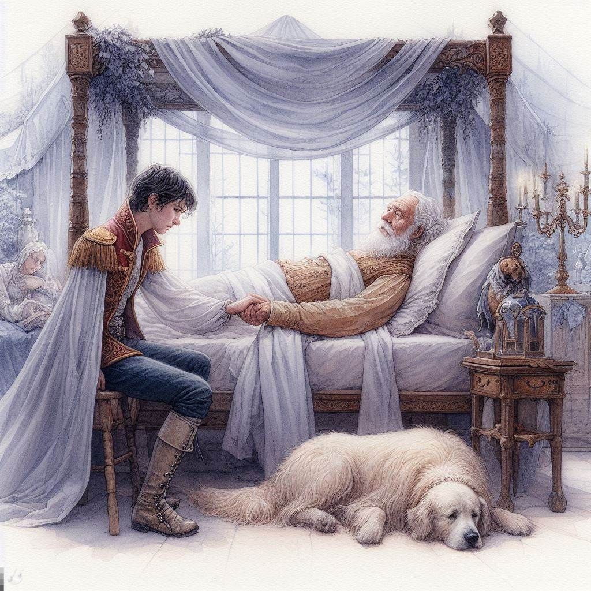
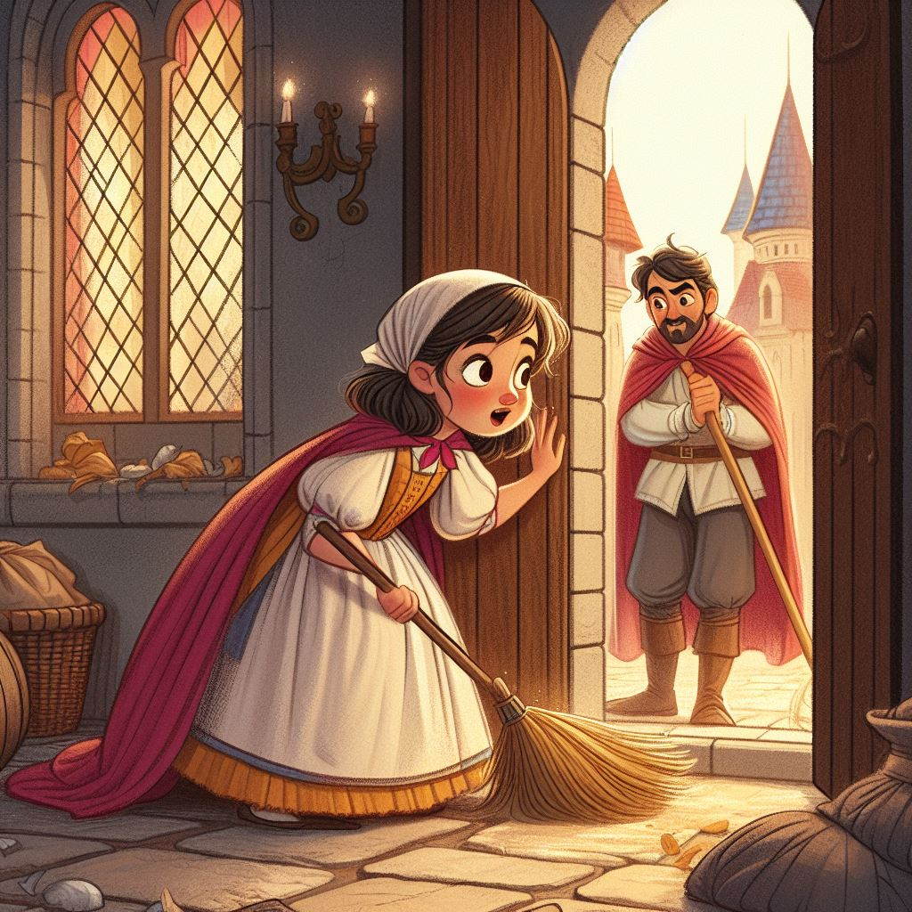
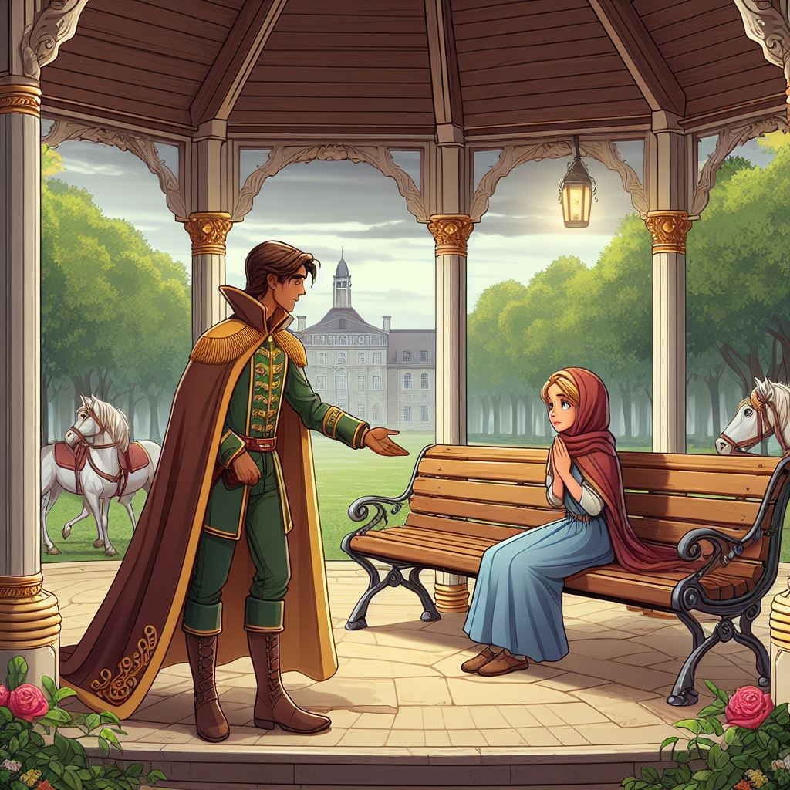

La esposa de Aarón
Había una vez un rey y una reina que tenían un hijo llamado Aarón, el chico era muy inteligente y también era gentil, sobre todo algunas princesas querían con él, pero él no les daba bola. A pesar de todo el chico creía que iba a buscar a su alma gemela, tal vez porque su padre estaba enfermo y él quería a alguien para que sea su princesa, y así puedan gobernar juntos, a pesar de que había un montón de chicas que querían con él, pero él no, y siguió esperando a su amada.
Hasta que se canso de tanto buscarla, entonces fue a un pequeño pueblo donde habia gente pobre y demasiado humilde, allí había una familia en la cual el papá era agricultor y tenía una hija llamada Sofía, ella también soñaba en tener un príncipe que le correspondiera, mientras ayudaba a su papá para así poder ayudar a su familia con la economía, en eso el príncipe necesitaba trabajadores y él junto con sus guardias caminaban y tocaban puertas para ver si alguien aceptaba su propuesta de empleo, hasta que llegó a la casa de Sofía, en eso sale su papá y al ofrecerle esta misma propuesta acepta gustosamente, sin embargo, fue muy díficil para la familia de Sofía aceptar que su papá se iba ir a la ciudad.
Luego de varias semanas la chica no sabia nada de su amado padre, entonces fue a buscar a su papá en la ciudad, pero antes de eso la chica se esforzó mucho para que a su familia no le hiciera falta alimento, y decidió ir en busca de su padre, en el camino conoció mucha gente envidiosa e infelices, pero ella solo quería que su padre regresara, entonces como nadie sabia sobre su paradero decidió ir al castillo, ahí encontro a su papá y fue a abrazarlo pero en eso le ve el príncipe Aarón, él vio a esa chica diferente a todas por su humilde estilo de vida que llevaba, así que se acerco a la chica, pero ella no le tomaba importancia porque el chico era más que ella y Sofía al ser una chical humilde creyó que no tenía oportunidades con el príncipe así que se va con su padre a su pequeño pueblo para que puedan disfrutar más tranquilos en su hogar.
Mientras tanto el príncipe Aarón solo estuvo pensando en Sofía, y entonces decidió ir a buscar información sobre la chica, sin embargo nadie sabía sobre ella, pasaron meses y la chica decidió volver a la ciudad para que pueda sostener a su familia y mandarle mas alimentos trabajando con mucho esmero como mucama, al culminar su horario de trabajo decide ir a un pequeño parque que quedaba por ahí y justo en ese momento pasaba el príncipe y al ver a la chica se acordo de ella y decide acercarse para hablar con ella, con lo cual la chica se queda sorprendida porque estaba al lado con otro chico, pero eso no le importo al príncipe y boto al tarado que la acompañaba, la cosa es que hablaron y a pesar de que habian personas que hablaban mal de ellos eso no le importo al príncipe.
Cada vez pasaron más días y se conocían cada vez más, más y más y sin darse cuenta la chica se enamoro del chico así mismo paso con Aarón, hasta que una noche estaba con sus amigos hablando y le hablan sobre la chica humilde diciendo cosas negativas de ella, pero eso al príncipe no le importo. Al día siguiente estuvieron con la chica conociendose más tiempo, finalmente el príncipe se declara a la chica para que esta pueda ser su media naranja y en eso la chica estuvo indecisa porque se iba a casar con un príncipe, y en esos momentos ella solo penso en si misma porque es una chica demasiado humilde, pero al chico no le importo de donde venia entonces ella acepto, se casaron y formaron una familia feliz. Fin